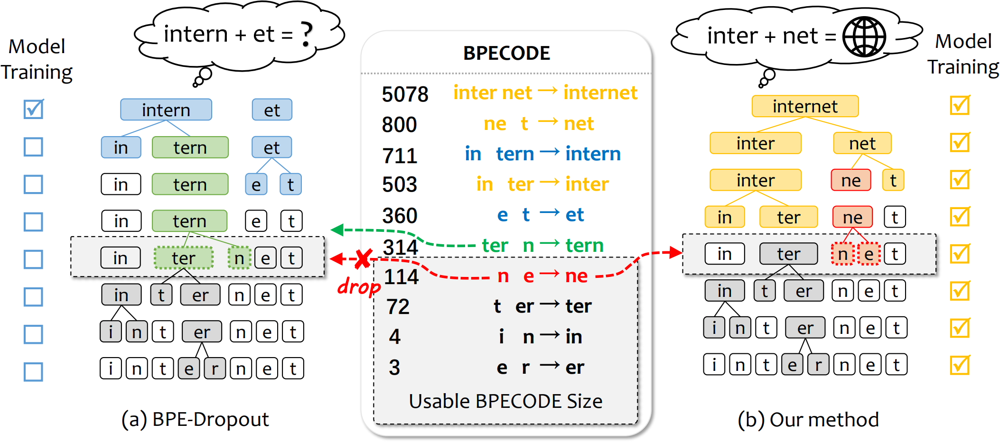

|
Yongqi Gao
I am pursuing a master's degree from the Department of Computer Science and Technology at Northeastern University, China. I work at Natural Language Processing Lab under the supervision of Prof. Tong Xiao and Prof. Jingbo Zhu.
I received my bachelor degree in 2023 from Northeastern University, majoring in Computer Science and Technology.
I joined the NEUNLP LAB at the fourth year of my college life. My research interest contains nearal machine traslation and machine learning. Nowdays, I am currently focusing on the study of large language models. Welcome to contact me if you are interested in what I am doing or have any questions to discuss!
Email /
Resume /
Github
|
|
Research
|
My primary focus lies within the domain of sequence generation tasks, encompassing fields such as machine translation.
|
Publications
|

|
Progressive and Consistent Subword Regularization for Neural Machine Translation
Yongqi Gao,
Yingfeng Luo, Qinghong Zhang, Huibo Shao,
Tong Xiao, Jingbo Zhu
The 13th CCF International Conference on Natural Language Processing and Chinese Computing (NLPCC), 2024
[pdf][poster]
We propose a simple subword regularization method.
During training, we progressively changes the granularity of tokenization from fine to coarse dynamically
and enforces the consistency between these multi-granularity subword segmentations
to effectively utilize semantic compositions inherent in words.
|
Honors & Awards
-
First-class Scholarship (Master, GPA Rank 1%).
2024
-
First-class Scholarship (Master, Postgraduate Entrance Examination Rank 1).
2023
|
© Yongqi Gao | Last updated: Jul. 2024.
|
|
{kind=link}